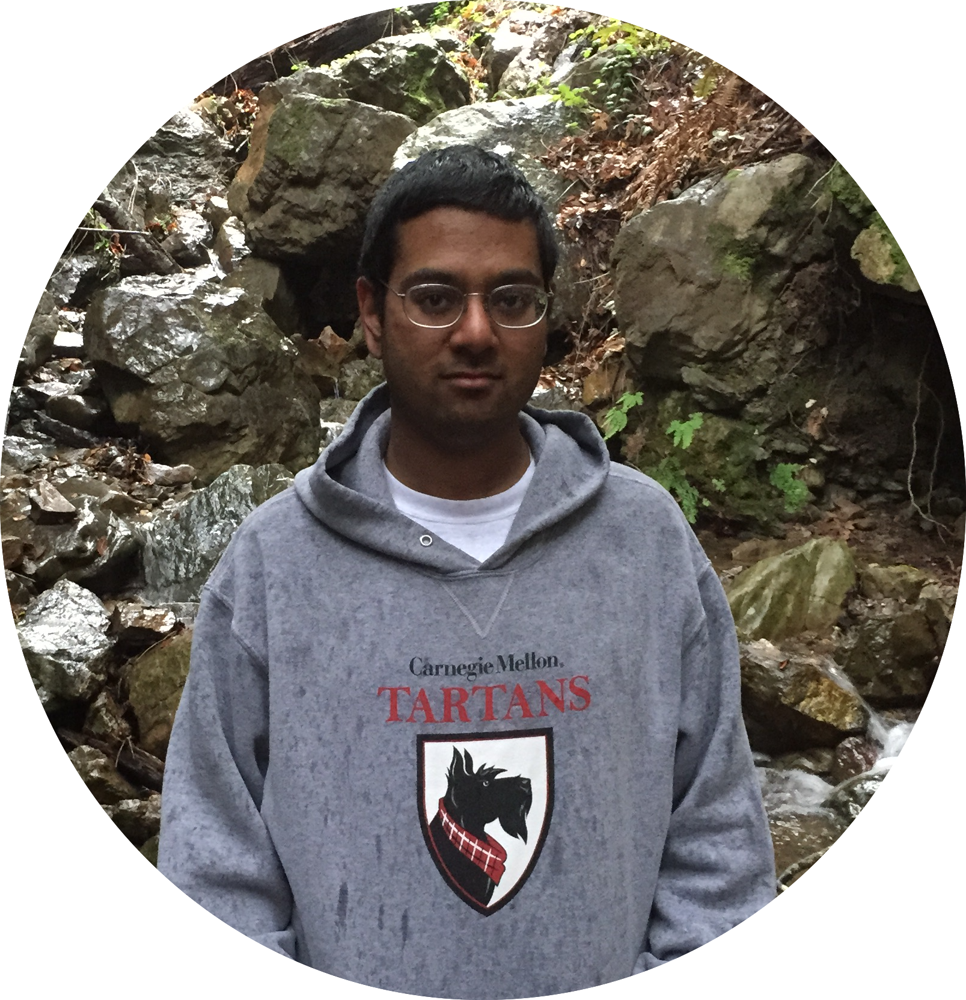

Mechatronics 2016 Team B
problem descriptionsystem design
system implementation
project management
media
about the team
documents
home
View the Project on GitHub jaimechu/cmumechatronics2016teamb
The Environmental Protection Agency estimates that Americans recycle less than half the recyclable items that they discard. This project serves to improve this statistic by automating refuse sorting at the point of collection. This device is capable of identifying and sorting materials into four categories: glass, plastic, metal and other. At a little over 50 gallons in volume (including 4 bins, each with 5-gallon capacity) and a footprint of 269 square inches, TOM, the Trash Organizing Machine, closely resembles the size and shape of existing trash cans and presents limited space constraints for the user.
Project Management
| Week | Date | Milestone(s) | Task(s) | Presentor |
| 2 | 18-Jan | Complete design concept proposal
Complete CAD models |
- | |
| 3 | 25-Jan | Design Concept Proposal (M) | Order parts
Build mock-up design Complete sensors demo |
- |
| 4 | 1-Feb | Mock-up Demo (M)
Sensors Demo (W) |
Complete motor control lab
Continue working on CAD design |
Sascha (Mock-up Demo)
Nishant (Sensors Demo) |
| 5 | 8-Feb | Motor Control Demo (W) | Esnure website is updated
Begin sensor testing Consider all physical models |
Jaime |
| 6 | 15-Feb | System Demo #1 (W)
Website Check (F) |
Continue working on CAD design
Continue sensor testing |
Patricia |
| 7 | 22-Feb | System Demo #2 (W) | Finalize CAD model and BOM | Andrew |
| 8 | 29-Feb | Design Presentation (M)
Peer evaluation #1 (Th) |
Begin subsystem prototyping | All |
| 9 | 7-Mar | Spring Break | ||
| 10 | 14-Mar | System Demo #3 (W) | Test PCB and finalize frame | Hannah |
| 11 | 21-Mar | System Demo #4 (W) | Finalize unit and complete sensor assemblies | Andrew |
| 12 | 28-Mar | System Demo #5 (W)
Website Check #2 (F) |
Integrate mechanical and electrical | Sascha |
| 13 | 4-Apr | System Demo #6 (W) | Complete final product | Jaime |
| 14 | 11-Apr | System Demo #7 (W) | Continue testing and tuning of machine and system | Nishant |
| 15 | 18-Apr | Final System Demo (W) | Prepare for demo | All |
| 16 | 25-Apr | Final System Demo Encore (W) | Begin writing final report | All |
| 17 | 2-May | Public Presentation (W)
Final Report (F) |
Complete final report
Complete website content |
All |
| 18 | 9-May | Website Check #3 (M) | Lab clean up (Tu) | - |
| Weekly | Website Update Team Meeting (Sa) | |||
| (M)/(Tu)/(W)/(Th)/(F) refers to the day of the week the assignment is due. | ||||
Parts List
Issues
Media
Viewing access. If you are not an authorized personal, please contact jaimechu@andrew.cmu.edu to be granted permission.About the Team
This team is comprised of six students from Carnegie Mellon University.
| Name | Year | Major(s) | Primary Task | Secondary Task |
 Jaime Chu Jaime Chu |
2016 | BS Electrical and Computer Engineering | Power | User interface |
| Sascha Demetris | 2016 | BS Mechanical Engineering | Fabrication of case | Lower half case CAD |
| Andrew Kelly | 2016 | MS Mechanical Engineering | Fabrication of sensing chamber | Sensing assembly CAD |
 Hannah Lyness Hannah Lyness |
2016 | BS Mechanical Engineering and Robotics | Integration design | Electromechnical design |
| Nishant Pol | 2016 | BS Electrical and Computer Engineering and Robotics | Controls | Sensing |
| Patricia Xu | 2016 | BS Mechanical Engineering and Material Science | Assembly of case | Upper half case CAD |